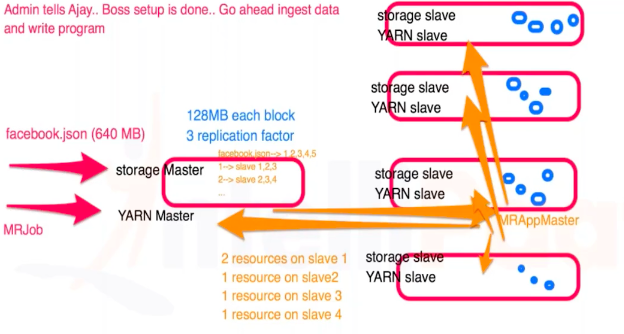

Hadoop gives us 2 services.(Store and process) It takes big data as input.
So now, how does store and process work in Hadoop?
Eg: Lets take a company that has its presence in 150 countries and people loved them. Just the previous day their FB page got 1B views. Now the CEO wants to see a dashboard where he sees the whole globe and upon hovering over any country, the dashboard should show how many likes the page received from that country.
The PM starts the project of building dashboard and he has 2 members in his team(Admin & Developer)
Setup of system infrastructure
Admin purchases 5 machines(one will be master and 4 will be slaves).
On the master node, he installs "storage master" and "processing master".
On the slave nodes, he installs "storage slave" and "processing slave".
Data distribution:
Developer takes data(Facebook.json since he gets the data from the FB page.) and this is sent as an input to the master node.
Lets say the size of this file is 640 MB. This file is broken into blocks of 128 MB and each block is replicated 3 times(Which means 15 blocks).
Storage master just has metadata(data about data which is split among the slave nodes).
Facebook.json -> 1,2,3,4,5 block numbers
Block 1->Slace 1,2,3
Block 2-> Slave 2,3,4
Data like this is stored on master node, which is metadata like above.
Program logic:
Processing master will copy the processing logic and the master will push it to the slave nodes.
The processing master will tell slave 1 to process block 1,2( which are local to you) and slave 2 will process block 3(which is local to you).
Key takeaway: How Store works?: Takes the data -> cut into pieces -> spread it across slave nodes. How Process works?: Write program ->Spread it on to machines -> Run it on local blocks.
Some names for systems in Hadoop ecosystem
Node type
Name
Hadoop
Master
Name node
Hadoop
Slave
Data node
MapReduce
Master
Job Tracker
MapReduce
Slave
Task Tracker
Hadoop 1.x vs 2.x
The setup which is Hadoop 1.x has one very serious limitation. It only allows you to write programs in MapReduce or any framework that runs in MapReduce.
In next version of Hadoop (Hadoop 2.X), instead of MapReduce, we bring a new component named YARN, which gives resources to any component whether it supports MapReduce or not. Means it can support MapReduce, Spark and others.
MapReduce is one of the way here now. :)
How does system infra change wrt Hadoop 2.x?

Storage infra remains the same.
For any incoming MapReduce job, YARN Master doesnt know how to run MapReduce but it knows a slave node that has App Master that can help process Mapreduce job.
Now YARN will initisalie App Master on any one of the slave node.
App Master is the process that will do the job.
YARN Master delegates the MapReduce job to MRAppMaster.
App Master sends a request stating the resources it required on slave nodes.
YARN Master acks the resources and then AppMaster sends requests to the slave nodes whose resources it requested the YARN Master.
So this AppMaster which can be MapReduce/Spark/Impala can ask resources.